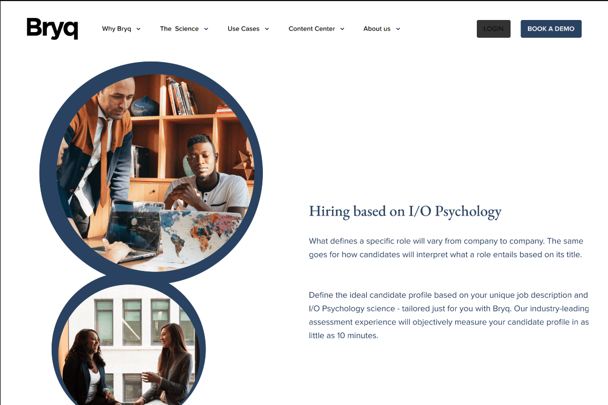
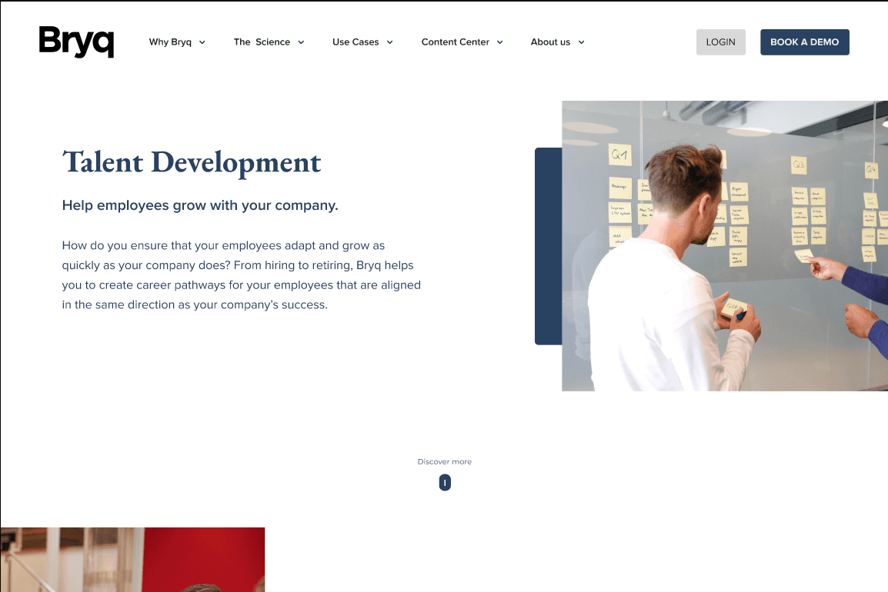
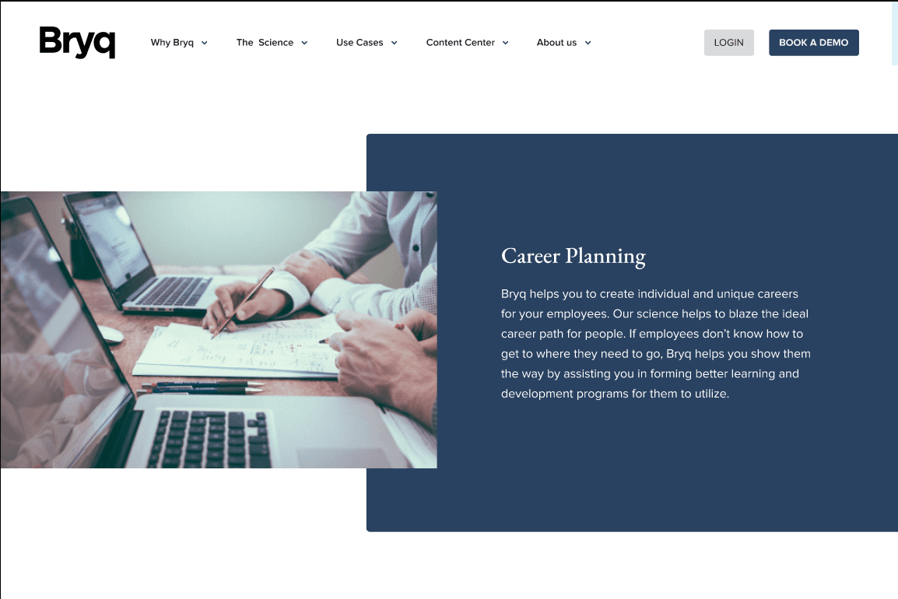

A talent platform with a powerful product — but a website that couldn't close.
Bryq is an AI-powered talent intelligence platform helping companies hire based on skills, not CVs. Despite strong product-market fit, the website underperformed on conversions — visitors weren't understanding the value proposition or taking action.
My role was to restructure the entire website experience — from messaging hierarchy to interaction design — with a singular focus on driving qualified signups and demo requests.


High traffic, low conversions — visitors were leaving without understanding what Bryq does.
Research revealed three conversion killers:
Unclear value proposition
The hero section led with features, not outcomes. Visitors couldn't quickly answer "what does this do for me?"
Buried CTAs
Call-to-action buttons were inconsistent in placement, styling, and copy — creating decision paralysis rather than momentum.
No social proof
Trust signals — logos, testimonials, metrics — were absent from key decision points in the user journey.
Research
User interviews with HR managers, analytics review, heatmap analysis, and competitive benchmarking.
Strategy
Defined conversion funnel, messaging hierarchy, and CTA strategy before touching visual design.
Design
High-fidelity Figma designs with clean layouts for both employer and candidate audiences.
Test & Iterate
Usability sessions, navigation testing, and A/B test planning before dev handoff.

Outcome-led hero section
Rewrote and redesigned the hero to lead with the business outcome ("Hire better, faster") rather than feature lists.
Consistent CTA system
Defined a primary/secondary CTA hierarchy with clear copy — one action per section, always visible above the fold.
Trust signals at decision points
Embedded customer logos, case study stats, and testimonials at the exact scroll positions where users historically dropped off.
Simplified navigation
Reduced top-level nav items from 9 to 5, with a mega-menu replaced by a clean dropdown structure.
The restructured website delivered a measurable step-change in performance. Clearer messaging reduced bounce rate significantly, while the consistent CTA system and trust signals drove a 3× increase in qualified conversions — demo requests and trial signups.